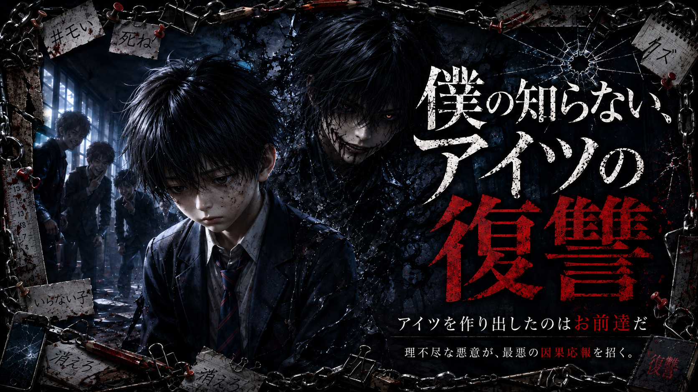

NOVEL — 縫牢街書庫
僕の知らないアイツの復讐
全3話完結あらすじ
私立誠藍初等・中等部（小中一貫校）に通う白石紡（しらいし つむぎ）は、誰にでも優しい大人しい少年。女子からも人気があったが、それがクラスのリーダー格・木村の激しい嫉妬を買い、小学5年生の夏から壮絶ないじめを受けるようになる。 精神の限界を迎えた紡が「助けて」…と願った夜から………【アイツ】が生まれてしまった。 それから約1年、紡がいじめを受けた翌日には、なぜかいじめっ子たちに不可解な災厄が降りかかるようになる。しかし紡自身には夜の記憶が一切なく、「アイツ」が何をしているのか、何が起きているのか、本当に何も見えないし分からない。 おとなしい少年の奥底に潜む、言葉の通じない狂気の怪物。これは、理不尽な悪意が最悪の因果応報を招く、戦慄の精神的ディストピア・サスペンス。
noteで開きます